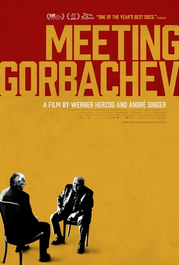

Werner Herzog
2018
90 minutes
TITLE: Meeting Gorbachev TEXT PLACEHOLDER 104
This is a straightforward Herzog documentary in which he interviews Mikhail Gorbachev, former President of the Soviet Union.
You were always a bit fascinated by Gorbachev. You actually recall reading (rather precociously) a book from the public library about the recent history of the Soviet Union and its recent reforms that had been published shortly before the attempted coup. You can't claim to have understood it well, but at the time it gave you a little bit of a toehold in understanding what was going on over there. This seemed like a sensible thing to try to understad as a student who was at that point starting to ponder a possible career in the military or one of the intelligence services. You were alarmed when the events that led up to the coup started unfolding. In particular you remember some kerfuffle the foreign minister Eduard Shevardnadze, who had been talked about at length in the book, resigned in protest and rejected a different post, warning that "a dictatorship is coming."
Not long after, hardliners were reporting that "Mr. Gorbachev is ill" and tanks were rolling into the streets in Moscow. From your perch in Indiana, no one around you seemed to really give a fuck that no one really knew who was running this country that was absolutely brimming with nuclear weapons pointed at the United States. Life went on as usual. You felt like Chicken Little warning that the sky was falling. CNN was covering things, of course, but in the days before social media made memes for every little event and every day was a new exciting crisis pitting half the country against the other half, no one cared about the collapse of a nuclear state.
You were unpleasantly surprised at the same drowsy reaction at the bizarre coup attempt in recent times, with Wagner forces marching into Russia during the Ukraine war. It was suddenly very unclear who was running that country for a few days until the dust settled and no one cared. You were similarly alarmed when the president was hospitalized with Covid and half the country was praying for him and the other half was gleeful that something bad had happened to him, but nearly no one was asking Who the fuck is really in charge of things now, and would they honestly let us know how seriously ill he is if worst came to worst?
You shrug it off. Maybe other people grew up with more confidence in the ability to say, "Don't worry, I'm sure the grown-ups have everything under control." This seems less and less likely each passing day.
Time to choose something different: